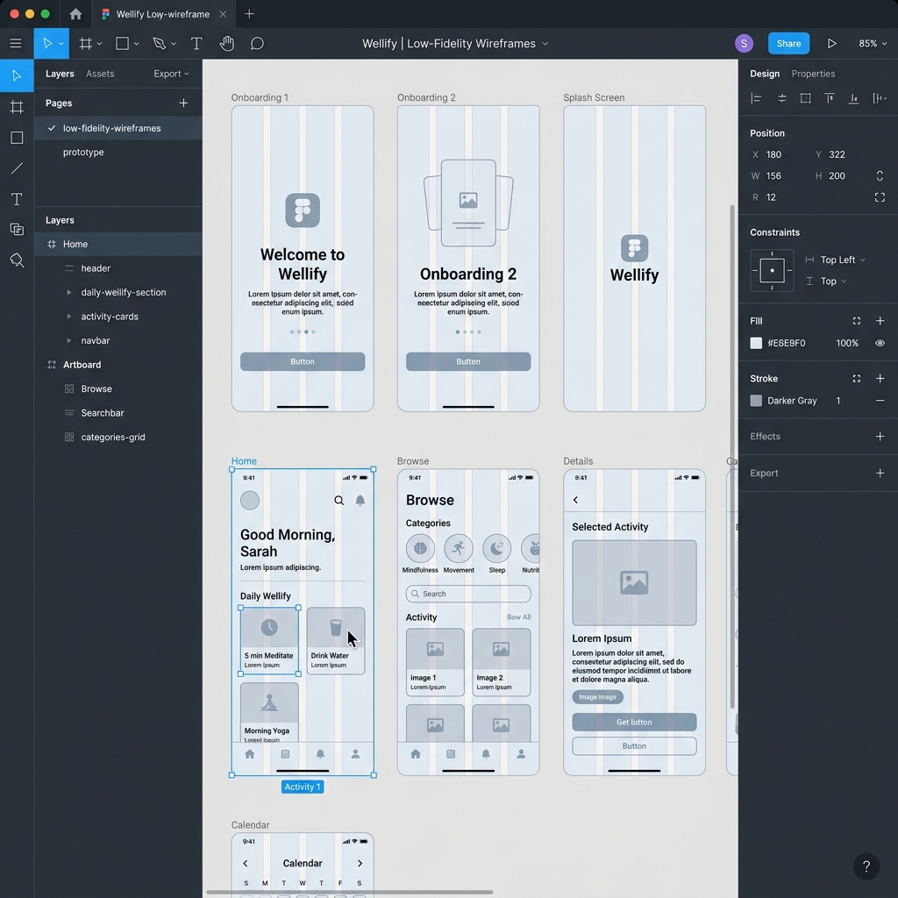

Analyzing behavior to define the structural foundation.
User Research shows 70% of meditation app users quit due to complex onboarding.
Users require absolute privacy for mood logs. Secure data vault is a top priority.
A need for offline forest/ocean soundscapes for use in remote areas.
Defining the "Whom" and the "Path."
The Burnt-Out Dev
Needs: High-speed interactions, dark mode, progress data.
The Creative Lead
Needs: Aesthetic simplicity, high-quality audio, sleep aids.
Building the structural skeleton as designed in Figma.

The 5-stage methodology behind the solution.
Understanding users through interviews and digital wellness analysis.
Synthesizing insights to create a solid problem statement and app focus.
Brainstorming features like "One-Tap Meditation" and "Secure Mood Vault."
Developing low-fidelity Figma wireframes and testing interaction models.
Planned usability testing with target personas to refine the Zen Player experience.